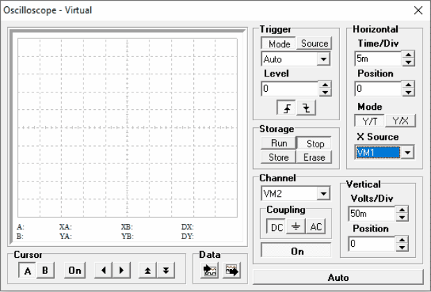
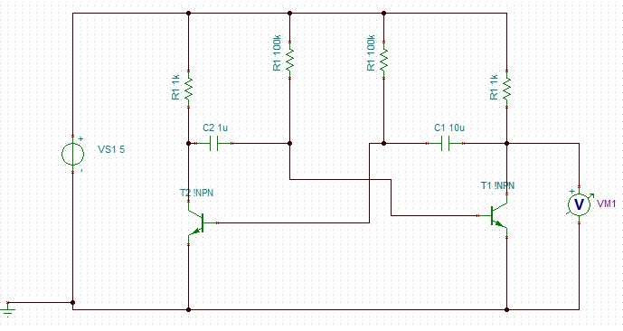
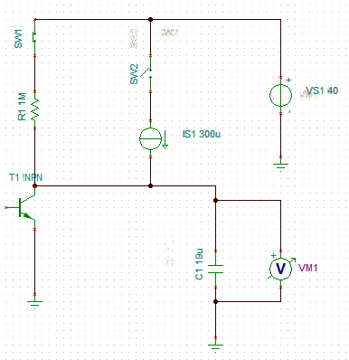
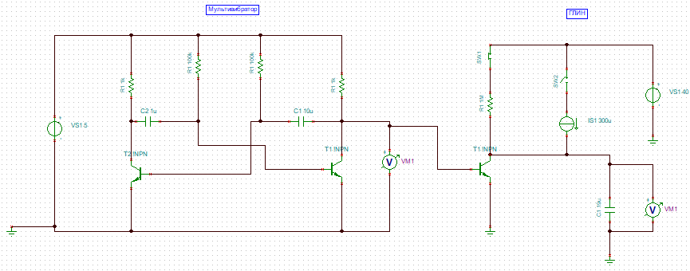
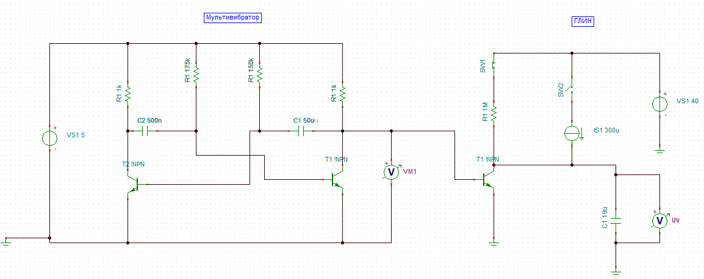

о выполнении Лабораторной работы № 0 по курсу "Электроника и Схемотехника" на тему: " Построение и исследование моделей усилителей на МС-ОУ простейших мультивибраторов и ГЛИН в среде Tina "
Составил cтудент: Огородников Филипп
Для того, чтобы проверить коэффициент усиления по напряжению данной схемы - откроем осциллограф и настроим его.
 Настроим осциллограф по следующим параметрам: Time/Div - 5m; X Source - VM1; Channel - VM2; Volts/Div - 50m; Дальше выполняем запуск во вкладке Storage (Run). Визуализация значения напряжения в канале VM2: Поменяем Channel (канал) на VM1 и поставим Volts/Div в 50 раз меньше (т.к. по заданию K = 50), тоесть 1m. Теперь мы видим, что осцилограф показывает одинаковое напряжение на обоих каналах. Итак, мы решили ПЕРВУЮ задачу - построили модель операционного усилителя с коэффициентом усиления по напряжению K = 50 и проверили его работоспособность. Схема задачи № 2:  Здесь мы видим схему простейшего мультивибратора. Визуализация работы простейшего мультивибратора: Итак, мы решили ВТОРУЮ задачу - построили модель мультивибратора и проверили его работоспособность. Схема задачи № 3:  Схема ГЛИН. Присоединим МУЛЬТИВИБРАТОР к ГЛИН  Далее выставим нужные нам настройки:  Визуализация работы ГЛИН: В данном задании у меня получилось собрать и продемонстрировать на модели Tina схему простейшего генератора линейно-изменяющегося напряжения (ГЛИН) на биполярном транзисторе. |